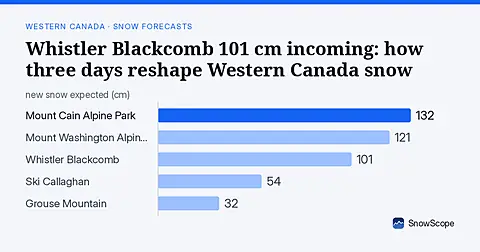
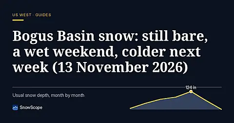
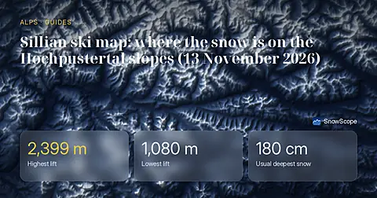
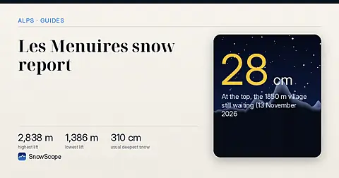
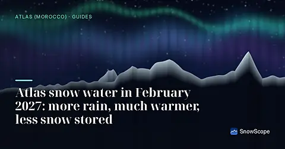
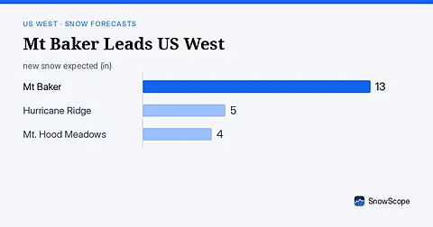
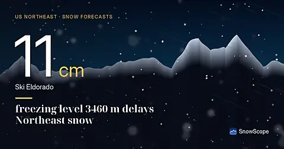
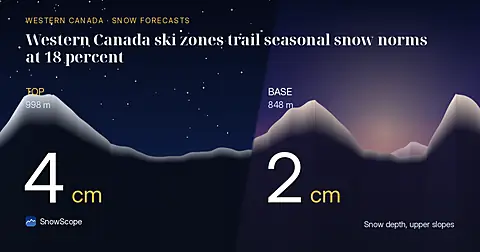

Snow reports · Snow forecast
Daily snow reports for skiers: where the snow is, what is coming and where to ski, from the SnowScope snow map and measuring stations. Every number comes from that day's data.

Whistler Blackcomb will receive 101 cm of new snow by November 25, far exceeding early-season norms. Mount Cain Alpine Park leads the region with 132 cm forecast.

Mount Washington Alpine Resort forecast to receive 359 cm of new snow in the next 14 days, with the heaviest falls in week one. Data from 22 November 2026.

Our snow model forecasts up to 199 cm across the US West in the next two weeks, with the heaviest snow arriving in week one. Data from 21 November 2026.

Mt Baker will see 22 cm of new snow by November 24, but the freezing level rises above 1,000 m on November 22, bringing rain-on-snow risk to lower slopes.

Mixed rain and snow expected across the Pyrenees over the next three days, with the freezing level rising above resort summits by Sunday. New snow forecast between 13–24 cm at altitude.

The National Weather Service expects 10 to 20 inches in the Wasatch from Thursday to Saturday. Where Utah's snowpack stands against past winters, why Utah snow is lighter, and when to ski.

Only Borovets and Bansko have a trace of snow at the top today, 2 cm each. A week ago Borovets had 11 cm. Day by day, and the one snowy day in the forecast.

Up to 30 cm of snow fell on northern Velebit and Bjelolasica on Friday 13 November 2026. By Tuesday it was gone. Day by day, what the mountains kept, and when snow comes back.

Hakuba Happo-one gets about 1.7 m of new snow at the top lift from 19 to 25 November, but rain at the base until 20 November. Day-by-day forecast at three heights.

New snow forecast for 15 Japanese ski resorts from 20 to 25 November: Hakuba and Tsugaike lead with about 90 to 97 cm at the top, Niseko about 35 cm.

Only 3 of 318 snow stations in Japan had snow on the ground this morning. Here is where it is, what melted this week, and where the next snow falls.

Western Canada forecast: 90 cm new snow at Mount Washington in the next two weeks, with 70 cm expected in late November and early December. Model run 2026-11-18.

Zermatt has 47 cm on upper slopes today, 690% above the November median. The 0°C level stays above 2200 m through Friday.

New snow forecast for the Alps through early December. Saint François Longchamp leads with 228 cm expected over 14 days, starting with 35 cm on Thursday.


96 cm of new snow forecast for Les Arcs over the next three days, with today bringing the heaviest falls; model run November 16.

Orelle reached 31 cm by 16 November, up 17 cm in one week. The Alps are forecast to get up to 103 cm more snow by 19 November.

79 cm new snow forecast for Les Grands Montets from 16–18 November, mostly above 2000 m elevation, based on forecast from 15 November.

Courmayeur leads forecast with 88 cm in 72 hours; snow depth is at 142 percent of normal for mid-November as of November 15 data.


Deer Valley ski conditions on 13 November 2026: no real snow on the ground yet, about 4 in near the top from the weekend storm, rain on the low East Village side below about 6,700 to 7,600 ft, and 11 in up top over the week.

Park City, Utah snowfall forecast for 13 November 2026: almost no snow on the ground right now, about 5 in near the summit from the weekend storm with a snow level of 7,400 to 7,700 ft, rain at the base, and about 12 in up top over the week.

Alpental snow forecast for 13 November 2026: about 1 in on the upper mountain, rain almost to the summit this weekend with a snow level near 5,400 to 5,600 ft, then 4 to 5 in of mixed rain and snow up top next week.

Bogus Basin snow check for Boise skiers on 13 November 2026: no snow on the ground yet, rain and mixed snow this weekend with a snow level near 6,300 to 6,800 ft, then colder air and about 8 in at the summit by next week.

The Sillian (Hochpustertal) ski map with our snow layer on 13 November 2026: 8.6 cm on the top at 2399 m, bare lower slopes, and a week of mixed rain and snow with the snow line near 1,800 to 2,000 m.

Silvretta Montafon snow conditions on 13 November 2026: 4.5 cm on the top at 2421 m, bare mid-mountain and valley, about 40 cm on the way up high this week while the valley gets rain below 1,500 m.

Snow depth in Sölden on 13 November 2026: about 9 cm at the top (3245 m), 5 cm at mid-mountain, none in the valley at 1346 m. 25 cm forecast up high this week, rain below about 1620 m. Glacier vs village, with 46 past winters.

Snowfall in Val Thorens, 13 November 2026: 27 cm fell at the top (3175 m) and 17 cm at 2498 m over seven days; snow depth is 50 cm and 8 cm. Next seven days: 86 cm at the top, 73 cm at 2498 m, snow line well below the village. Usual snowfall season from 46 winters.

Snow depth in Chamonix on 13 November 2026, height by height: nothing on the valley floor, 1 cm at 2001 m, 12 cm at the top of Brévent-Flégère (2486 m), 5 to 24 cm at the top of the Grands Montets (2768 m). About a metre forecast up high this week, rain in the valley. How deep Chamonix usually gets, from 46 winters.

Les Menuires snow report for 13 November 2026: 28 cm at the top (2838 m), none lying at 2112 m or 1386 m. About 80 cm due at the top in seven days, snow line around 1500 to 1700 m. Why Val Thorens, 450 m higher up the same valley, already has more.

Tignes snow conditions on 13 November 2026: 42 cm at the top (3447 m), 12 cm at 2503 m, a bare valley at 1559 m, and 99 cm forecast at the top over seven days, with rain below about 1700 m. How it compares with 46 past winters.

Western Canada mountains carry 42% of their normal snow for mid-November as of 12 November, but 142 cm is forecast over the next two weeks.

Saint François Longchamp sits at just 3 cm of snow, 12% of usual depth for this time, but 110 cm is forecast in the next two weeks.

Forecast from November 12: US West gets 11 in (27 cm) of new snow Saturday November 14; 56 resorts receive powder, busy week starts.

Okemo Mountain will get 15 in (38 cm) of new snow by November 14, with 11 in (29 cm) on November 13, our snow model from November 11 shows.

Freezing level climbs to 13,000 ft (3,960 m) at Aspen Snowmass, creating rain-on-snow risk as temperatures warm mid-November (forecast from 11 Nov data).

Mt. Shasta Ski Park is forecast to receive 17 in (43 cm) of new snow through November 14, with the most at high elevations (model run November 11).

La Grave leads the Alps with 52 cm forecast in 24 hours as of 11 November; early snow arrives weeks before peak accumulation.

On November 10, the freezing level reaches 5,313 ft (1,620 m) above Northeast summits, bringing rain before 20–25 cm of snow arrives.

Northeast forecast made 10 November: 10 in (25 cm) of new snow arriving through 13 November will transform snow cover from 1 resort to 62.

Piau-Engaly leads the forecast with 37 cm of new snow by 13 November; 24 cm is expected on 12 November.

How much water the Atlas snow may hold in February 2027: the European seasonal forecast is about 3 °C warmer and wetter in the west and south, so snow odds stay low across Morocco's river basins.

Aspen Snowmass at 5 centimetres, 23 percent of normal for mid-November. Freezing levels above 2,600 metres brought rain instead of snow across the US West on November 8.

Freezing level reaches 3400m–3600m over the next three days, bringing rain to the snowpack from 09–11 November. Forecast from 08 November.

Whistler Blackcomb gained 24 cm in one week to 50 cm total; 62 cm more forecast in 72 hours as major storms hit mountains (8 November data).

About 192 mm of water on Whistler's upper slopes from 7 to 12 November: the 0 °C level swings between 1,410 and 2,920 m, snow up high, rain below.

Mt Baker: 8 in (21 cm) at the summit versus less than 1 in (2 cm) at the base. November forecast shows how this height gap will shift.

About 65 mm on Toubkal by 12 November, but the 0 °C level stays near 4,000 m: rain at Oukaïmeden and in the valleys, snow only on the top.

Orcières Merlette leads the Alps forecast with 36 cm of new snow in the next three days, mostly on November 9–10, based on data from November 7.

Mt Baker leads the US West with 19 in (47 cm) of upper snow, expecting 13 in (33 cm) through November 9. Model forecast from November 6.

Ski Eldorado forecast 11 cm of new snow but freezing level reaches 3460 m on Nov 6, delaying snow arrival across the Northeast.

Whistler Blackcomb forecast: 74 cm in 72 hours; weeks 13, 12, 11 bring the year's deepest snow historically. Forecast from 5 November.

Mt Baker will receive 16.5 in (42 cm) of new snow through November 8, leading the US West, based on our model run on November 5.

Whistler Blackcomb sits at 27 cm on 5 November, only 41 per cent of normal for this date. A major system brings 22 cm snow in the next 24 hours.

Rain will replace snow at Mt Baker on November 6, as the freezing level climbs to 8,957 ft (2,730 m), far above the ski area.

Ski Callaghan leads Western Canada forecast with 48 cm new snow through 7 November, mostly on 6th, with higher elevations capturing deeper accumulation.

Western Canada's ski resorts hold snow at 18 percent of early-season norms as of November 3, with Mount Cain leading and lower elevations lagging far behind.

Snow on 3 November 2026: Kendall Mountain 53 in (134 cm) after a storm, Big White 91 cm, the Alps up to 55 cm at Bonneval-sur-Arc. Model and station data.